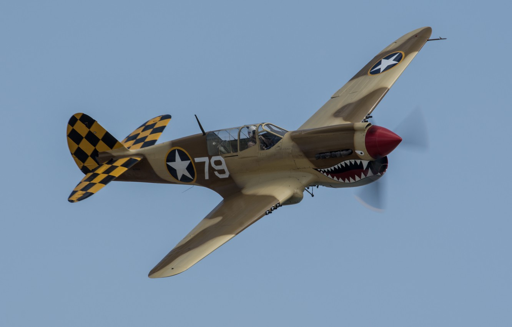
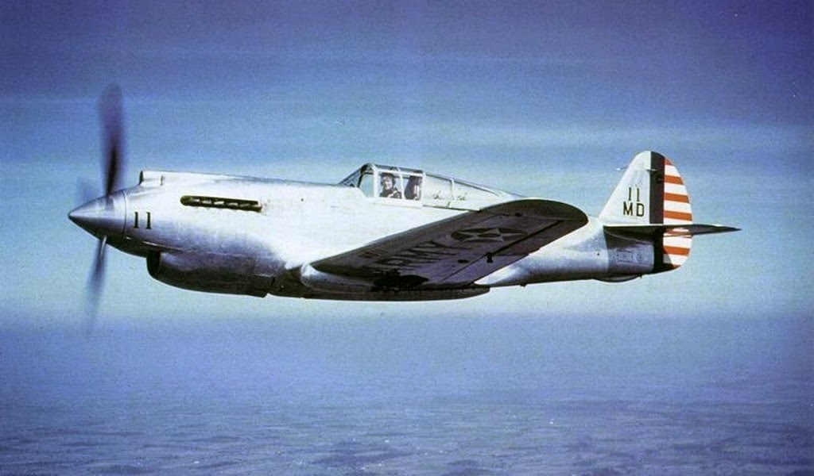

O Curtiss P-40 Warhawk foi um caça norte-americano, resultante do desenvolvimento
do
Curtiss P-36 Hawk com o objetivo de criar uma aeronave apta para produção em massa
no menor
tempo de
possível. Voou pela primeira vez em 1938, e foi usado em grande
número em diversos teatros da
Segunda Guerra Mundial, geralmente conhecido como
«Warhawk», embora na Grã Bretanha tenha sido
designado por «Tomahawk» até ao modelo
«C» e «Kittyhawk» a partir do modelo «D». Tornou-se o avião
da Curtiss-Wright mais
conhecidos durante toda a Guerra, mas foi também um dos caças mais
controversos
da Guerra. Foi vilipendiado por muitos na época como sendo muito lento, com falta
de
manobrabilidade, com uma taxa de subida muito baixa, em grande parte obsoleto
pelos padrões
contemporâneos, mesmo antes de entrar em produção.
Estranhamente
às criticas, todas ela válidas, o P-40 manteve-se em produção mesmo depois de
outros
caças mais avançados estarem disponíveis em quantidade tornando-se
o terceiro caça Norte
Americano
da Segunda Guerra Mundial mais produzido,
a seguir ao North American P-51 Mustang e Republic P-47
Thunderbolt .
| Ano | 1938 |
|---|---|
| Pais de Origem | EUA |
| Tripulação | 1 |
| Motor | 1 x Allison V-1710-81 |
O Curtiss P-40 já estava obsoleto pelos padrões europeus mesmo antes do protótipo realizar o primeiro voo, e durante o seu período de operacionalidade nunca os atingiu, apesar das suas insuficiência iniciais, nomeadamente, o baixo poder de fogo, a falta de blindagem adequada e de tanques de combustível auto selantes (muitas destas insuficiências iniciais eram um reflexo dos requisitos da USAAC da década de 1930), terem sido largamente superadas.
Apesar da validade das criticas, a verdade é que os Curtiss P-40, em conjunto com os Bell P-39 Airacobra serviram bem a USAAF durante o primeiro ano da Guerra do Pacifico quando não existia outro caça disponível em quantidade para se opor ao avanço japonês.
As insuficiências do P-40 resultavam em grande parte dos conceitos que estiveram subjacentes ao seu desenvolvimento. Fora grandemente desenvolvido como um caça de apoio próximo de baixa altitude e por isso o desempenho de baixa altitude e robustez foram privilegiados em detrimento das capacidades de interceção e combate em altitude. Tais opções resultavam da doutrina militar e conceitos táticos dos EUA na segunda metade da década de 1930, que considerava remoto um ataque em altitude aos territórios Norte Americanos.
Durante a guerra, o Comité Especial do Senado Norte Americano para Investigar
o
Programa de
Defesa
Nacional (geralmente conhecido como o "Comitê Truman"
por ser liderado pelo futuro presidente Harry
Truman) criticou o Curtiss P-40 e as
opções que estiveram subjacentes ao seu desenvolvimento
considerando-o um projeto
inadequado estranhando que a sua produção contínua fosse mantida durante
um tão grande
período mesmo depois de aeronaves mais recentes e muito mais capazes estarem
disponíveis. O comité acabaria por concluir não ter existido qualquer favorecimento da
Curtiss, que
no entanto graças ao programa de produção do P-40tinha expandido a sua área
de produção em 400% com
uma força de trabalho de cerca de 45000 pessoas em fabricas
em Buffalo, Nova York, Columbus, Ohio,
St. Louis, e Missouri. No auge da produção em
tempo de guerra, todo o complexo da Divisão de Aviões
Curtiss produzia sessenta
aviões por dia tendo entre 1939 e novembro de 1944 sido produzidos um
total de 13.739
Curtiss P-40 Warhawk para a USAAF , e Tomahawk e Kittyhawk para a RAF e países
da
Commonwealth.
A origem do Curtiss P-40 Warhawk remonta ao Curtiss P-36 Hawk (Modelo 75), que dispunha de um motor radial refrigerado a ar. O primeiro passo em direcção ao Warhawk foi o XP-37, um P-36 foi modificado para incorporar um motor Allison V-1710 refrigerado por líquido com um turbocompressor, em que o cockpit foi colocado numa posição bastante recuada. Os inúmeros problemas com o turbocompressor conduziram ao abandono do projeto em favor de outro menos complexo também com motor Allison V-1710 mas sem turbocompressor, como forma de superar as limitações dos motores radiais. O XP-40 (Modelo 75P) fora projetado por Donovan Berlin depois da USAAC ter, em 1937, autorizado a Curtiss a instalar num P-36A um motor Allison V-1710-19, sobrealimentado, de 1150cv. O projeto exigiu o redesenho significativo da estrutura da aeronave principalmente da fuselagem à frente do cockpit, que, ao contrario do do XP-37, permaneceu na mesma posição. A entrada de ar para o carburador foi instalada na parte superior do nariz entre as duas armas e o radiador de óleo foi montado numa posição ventral atrás do bordo de fuga das asas.
O XP-40 voou pela primeira vez em outubro de 1938, armado com duas metralhadoras
de
12,7mm
montadas
na parte superior do nariz sincronizadas para dispararem através
do arco de hélice, e com
possibilidade de carregar seis bombas de 9 kg nas asas.
Os testes
de voo iniciais foram dececionantes, com o XP-40 a atingir uma velocidade máxima de
apenas
482Km/h.
O radiador de óleo inicialmente colocado sob a fuselagem à popa da
asa, mas foi gradualmente movido
para
a frente até que finalmente acabou localizado por
baixo do nariz. A entrada do radiador foi
redesenhada
para incluir um radiador de óleo, e
dois radiadores do liquido de arrefecimento do motor de
etileno/glicol. O XP-40 inicial
tinha uma única porta de escape em cada lado da fuselagem, mas na
sua
forma final
tinha seis saídas de escape separadas em cada lado. O XP-40 inicial herdara do P-36
um
conjunto de placas de carenagem que cobriam as rodas principais quando eles se
retraíram em seus
poços
de asa, mas estes acabariam por ser eliminados e substituídos
por duas pequenas portas que fechavam
sobre os suportes de roda após a retração.
Na sua versão final a velocidade máxima do XP-40 era de 550 km/h a 3600 metros
de altitude, com um
peso
bruto de 2840 kg, o que o tornava mais rápido que
o Hawker Hurricane, reivindicando um raio de acção
quase duas vezes maior
(era no entanto mais lento que o Spitfire ou o Bf 109E).
Embora o XP-40 não pudesse igualar o desempenho (especialmente em altitude) das aeronaves equipadas com turbocompressor, era menos caro e poderia atingir a quantidade de produção necessária para a USAAC um ano antes das outras. Além disso, o XP-40 era baseado numa fuselagem já testada em campo e comprovada que estava em produção há alguns anos. Consequentemente, em abril de 1939, a USAAC adotou uma abordagem conservadora e encomendou 524 aeronaves de produção sob a designação Curtiss P-40 (Modelo 81). Naquela época, era a maior encomenda de produção de um caça Norte Americano, reduzindo as quantidades das encomendas colocadas na mesma data para os caças de teste em campo YP-38 e YP-39 (semanas depois também seria emitida em encomenda para 13 YP-43). O Curtis P-40 de serie era semelhante à configuração final XP-40, mas tinha instalado um motor Allison V-1710-33 (C15) de 1040cv e tinha como armamento, para além das duas metralhadoras de 12,7mm no nariz, mais duas metralhadoras de 7,62mm nas asas. Só posteriormente seriam instalados tanques de combustível alto selantes, uma canópia prova de bala e blindagem para o piloto. Incomum para a época era o seu trem de cauda também retrátil.
Os primeiros P-40 começaram a chegar à USAAC a partir de junho de 1940 e os três
primeiros, entregues com camuflagem completa verde oliva no topo e cinza
por baixo e as listas
padrão do
leme, foram usados para testes de serviço sem que lhes tenha sito atribuída a usual designação de YP.
O primeiro voo de um P-40 ocorreu em abril de 1940. O P-40 demonstrou uma velocidade máxima de 574 Km/h
a 4570 metros, atingindo o teto de serviço de 9980 metros em 5,2 minutos, e com um raio de ação de 1528
km.
Com o conhecimento do P-40, em maio de 1940 o Armee de l'Air francês encomendou 140, H-81A (modelo de exportação do P-40), mas que não seriam fornecidos devido a invasão alemã, tendo a encomenda sido assumida pelo Reino Unido, para a RAF, sob a designação de Tomahawk I (16 foram enviados para a União Soviética).
Apenas 200 da encomenda de P-40 inicial foram realmente concluídos como tal. Em setembro de 1940, os 324 aviões restantes da encomenda inicial tiveram sua entrega adiada para permitir a Curtiss para acelerar a entrega dos 140 H-81A para a França, posteriormente entregues à RAF. A encomenda para a USAAC continuaria com a entrega de aeronaves do padrão seguinte, Curtiss P-40B (Modelo H81-B), cujo primeiro, voou em março de 1941 e que diferiam dos anteriores por possuírem uma segunda arma de 7,62mm e cada asa (um total de quatro metralhadoras nas asas), incluir blindagem protetora para o piloto, composta por uma canópia com 38 mm de vidro blindado à frente e uma blindagem com 7 a 9 mm de espessura atrás e tanques e combustível selados exteriormente.
O equivalente de exportação era o Tomahawk IIA (Modelo H81-A2) que diferia da versão Norte Americana por possuir nas asas metralhadoras Browning de 7,7mm (110 foram produzidos para o RAF, dos quais alguns foram enviados para a União Soviética). A partir de abril de 1941 começaram a ser entregues aeronaves no padrão P-40C, com os quais seria concluída a encomenda inicial da USAAC. Os P-40C mantinham o mesmo motor Allison V-1710-33 de 1150cv das versões anteriores mas com um melhorado sistema de combustível, maior capacidade e tanques auto selantes e provisão para um tanque de queda de 200 litros sob a fuselagem. O armamento da versão B foi mantido, mas o radio SCR-283 foi substituído por um SCR-247N. Durante o ano de 1941, um número substancial de P-40B e P-40C foram enviados para bases da USAAF no Pacífico, nomeadamente, para os aeródromos de Clark nas Filipinas, e Wheeler no Havaí. Durante o ataque a Pearl Harbor a 7 de dezembro de 1941, mais de sessenta foram destruídos no solo, poucos foram capazes de levantar voo sendo rapidamente derrubados por Zeros, embora um grupo tenha conseguido atacar uma formação japonesa, alegando a destruição de cinco aeronaves inimigas. Após o ataque apenas 25 P-40 estavam em condição de voo.
A versão equivalente de exportação do P-40C era o Tomahawk IIB (Modelo H81-A2), do qual foram produzidas 930 unidades para a RAF, alguns dos quais foram enviados para a URSS, e outros para a China, com o primeiro grupo de voluntários americanos da força aérea chinesa (1941–1942) apelidados por “Flying Tigers”. Algumas outras foram enviadas para o Egito e Turquia e as restantes foram extensivamente utilizadas pela RAF e forças da Commonwealth no Norte de Africa. Aí demonstraram uma boa capacidade de combate a baixa altitude e uma excelente capacidade para absorver danos, num cenário em que tinha como oponentes os obsoletos biplanos Fiat CR-42 e os mal armados caças Fiat G-50. No entanto tinham dificuldade em se opor aos Macchi C-202 Folgore da Regia Aeronautica, e eram incapazes de fazer frente aos Bf 109E, transferidos do teatro europeu.
A partir de maio de 1941, das linhas de produção, começou a sair uma nova variante o P-40D (Modelo H87A-2), que adotara um novo motor Allison V-1710-39 de 1150cv originalmente proposto para o XP-46, mas que fora decidido ser adotado para uma nova versão do P-40 em junho de 1940. A adaptação ao novo motor tornou a aeronave suficientemente diferente das versões anteriores para que a Curtiss lhe atribuísse a nova designação interna de Modelo 87. O P-40D introduziu um novo desenho de nariz mais curto, mantido em todas as versões subsequentes e com uma geometria completamente diferente. O comprimento total da aeronave foi reduzido em 15 centímetros a seção transversal da fuselagem foi reduzida e o trem de aterragem foi encurtado. O radiador aumentou de tamanho e foi colocado mais à frente por baixo do nariz. Foram adicionados cerca de 80 quilos de blindagem adicional, as armas da fuselagem foram eliminadas, e duas armas de 12,7mm com novos carregadores hidráulicos foram instaladas em cada asa (havia provisão nas asas para dois canhões de 20 mm, mas que nunca foram instalados). Sob a fuselagem havia provisão para um suporte para um tanque de 190 litros de combustível ou uma bomba de 500 quilos e as asas foram equipadas com pontos de fixação para seis bombas de 9 kg. Porém o peso bruto da aeronave aumentou para 3900 kg com consequências negativas na sua taxa de subida e teto máximo.